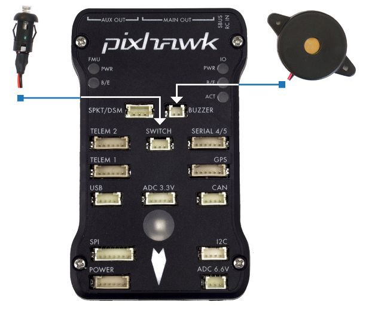
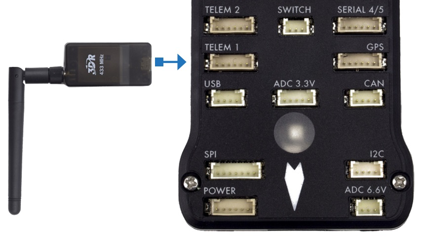

Conexões¶
A imagem abaixo apresenta as conexões dos sensores e demais itens inclusos no Pixhawk. Cada parte será analisada com mais detalhes nas seções a seguir.
Campainha e interruptor de segurança¶
A campainha fornece sinais sonoros que indicam a situação do VANT. Enquanto o interruptor atua na segurança da aeronave, bloqueando e desbloqueando os motores.
Note
O interruptor de segurança é ativado por padrão e quando ativado, não permite o voo, bloqueando os motores. Para desativar o modo de segurança, pressione e segure o interruptor por 1 segundo. Você pode ativar o modo de segurança novamente pressionando o interruptor.
Para conectar a campainha e o interruptor de segurança (itens obrigatórios), basta liga-lós ao Pixhawk como mostrado abaixo.
Divisor I2C¶
O slitter I2C expande a quantidade de portas I2C permitindo a conexão de até quatro periféricos ao Piwhawk. Utilize um cabo de 4 fios para conectar o slitter I2C e para alimentar uma bússola externa, um display LED, um sensor de velocidade do ar digital e/ou qualquer outro periférico compatível ao veículo.
Sensor de velocidade do ar¶
. . .
GPS + Compass¶
O GPS, outro dispositivo obrigatório, deve ser conectado à porta GPS (6 pinos) usando o cabo de 6 fios fornecidos no kit. A conexão da bússola é opcional, porém recomendamos fortemente sua utilização. Para conecta-lá, ligue um cabo de 4 fios a uma porta I2C do slitter I2C, como mostrado abaixo.
Note
O GPS/bússola deve ser montado no chassi da aeronave o mais longe possível de outros componentes eletrônicos, com a seta indicadora voltada para a frente e o mais alinhada possível com o Pixhawk.
Rádio controle¶
O sistema de rádio com controle remoto (RC) é necessário caso deseje controlar manualmente seu veículo, já que o PX4 não requer um sistema de rádio para modos de voo autônomo.
Para conectar o sistema de rádio controle, será necessário selecionar um transmissor/receptor compatível e depois vinculá-lo para que eles se comuniquem.
Tip
Leia as instruções que acompanham seu transmissor/receptor.
As instruções a seguir mostram como conectar os diferentes tipos de receptores ao Pixhawk:
- Os receptores Spektrum e DSM se conectam à entrada SPKT/DSM .
- Os receptores PPM-SUM e S.BUS conectam-se aos pinos de terra, potência e sinal RC, conforme mostrado.
- Os receptores PPM e PWM que possuem um fio individual para cada canal devem se conectar à porta RC por meio de um codificador PPM (os receptores PPM-Sum usam um único fio de sinal para todos os canais).
Para obter mais informações sobre a seleção de um sistema de rádio, a compatibilidade do receptor e a ligação do seu par transmissor e receptor, consulte: Transmissores e receptores de controle remoto.
Telemetria¶
Os modens de telemetria podem ser usados para comunicar e controlar um veículo em voo a partir de uma estação terrestre (por exemplo, você pode direcionar o VANT para uma posição específica ou carregar uma nova missão). Um modem deve ser conectado ao seu veículo, como mostrado abaixo. O outro modem deverá ser conectado ao computador da estação terrestre ou dispositivo móvel (geralmente por uma porta USB).
Módulo de energia¶
O módulo de energia (Power module - PM) fornece energia ao controlador de voo da bateria e também envia informações sobre a corrente analógica e a tensão fornecida pelo módulo (incluindo a energia do controlador de voo e dos motores, etc.).
A saída do modulo de energia (PM) deve ser conectada à porta POWER do Pixhawk usando um cabo de 6 fios, como apresentado na imagem. A entrada do modulo deverá ser conectada a uma bateria de LiPo, enquanto a saída principal será responsável por fornecer energia aos ESCs e motores da aeronave (possivelmente através de uma placa de distribuição de energia, a depender da aeronave).

Sensor de distancia¶
O Pixhawk suporta vários sensores de distância diferentes, incluindo os Lidars (que usam lasers ou raios infravermelhos para medições de distância) e Sonars (que usam som ultrassônico), e também incluem os buscadores de alcance LED Maxbotix Sonar e Pulsed Light. Dessa forma, a instalação varia de dispositivo para dispositivo. Mais informações a respeito da configuração dos sensores pode ser visualizada em Rangefinders.

Exemplo de alguns sensores de distância compatíveis
Para implementar o projeto, escolheu-se o sensor Lidar para habilitar a função de pouso automático. O sensor lidar pode ser conectado ao Pixhawk de duas formas, pelo protocolo I2C na porta I2C (ou I2C slitter) ou por pulse-width-modulation (PWM) na trilha PWM.
De acordo com a documentação do Pixhawk, o lidar utilizado apresenta problemas de interferência com outros dispositivos quando conectado na porta I2C. Assim, escolheu-se a conexão por PWM. Um diagrama de conexão pode ser vista na tabela abaixo e o esquema de montagem pode ser visto na figura a seguir, onde o valor do resistor pode variar entre 200Ω e 1kΩ [1].
| Sinal LIDAR-Lite | Sinal Pixhawk |
|---|---|
| J1 | CH6 Out - V+ |
| J2 | CH6 Out - Signal (sinal interno 55) |
| J3 | CH5 Out - Signal (sinal interno 54) |
| J4 | |
| J5 | |
| J6 | Ch6 Out - Ground |
Mais detalhes sobre a conexão podem ser encontrados em LIDAR-Lite Rangefinder.
| [1] | Eduardo Moura Cirilo Rocha. 2017. Desenvolvimento de um sistema com veículos aéreos não-tripulados autônomos, Universidade de Brasília, Brasil |